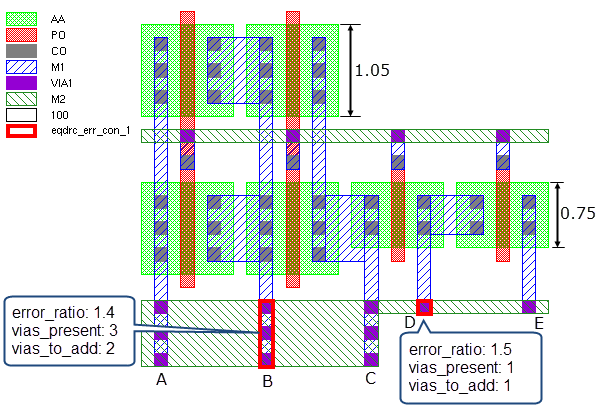

This
example uses DFM Property CONNECTED to identify via transitions
that do not have enough redundant vias to handle the current for
the total gate width being driven by a particular metal line.
Try It!
 |
Calibre Advanced DRC (eqDRC) Tutorial and Example Kit
Go to this page on Support Center
to download the complete eKit.
This example is in the device_routing_checks/gate_width_via_count example
directory.
|
Procedure
- Define
the gate width value per via variable width_per_via:
VARIABLE width_per_via 1
The total gate width divided by width_per_via gives the fractional
number of vias required for the total gate width.
- Derive the sd (source-drain)
and via transition layers and establish connectivity:
sd = AA NOT POLY
viatrans = (AND M1 M2) INTERACT VIA1
CONNECT M1 M2 BY VIA1
- Derive a layer that contains
the edges of each gate:
gateedges = INSIDE EDGE POLY AA
- For each source-drain region,
measure the width of the gate that the region overlaps. The following
DFM Property operation uses sd as the primary layer and gateedges
as the secondary clustering layer. The gatewidth property uses the
LENGTH function to get the width of the gate for each source-drain
region:
sdprops = DFM PROPERTY sd gateedges OVERLAP ABUT ALSO MULTI
[gatewidth = LENGTH(gateedges)]
CONNECT M1 sdprops BY CON
Connect the sdprops layer to the M1 layer for use in the next
step.
- Sum the gate widths for each
source-drain region that connects to an M1 geometry. Do this by
using a DFM Property operation with the CONNECTED keyword, M1 as
the primary layer, and sdprops as the secondary layer. The property
sum_gatewidth is the sum of the gatewidth property over all sdprops
shapes connected to the M1 shape.
m1props = DFM PROPERTY M1 sdprops OVERLAP CONNECTED MULTI
[sum_gatewidth = PROPERTY(sdprops,gatewidth)]
- Verify that the required number
of vias are present and define a property vias_to_add that displays
how many vias must be added to pass the check:
These properties are calculated:
“+vias_needed”
— The fractional number of vias that are required for the total
gate width (sum_gatewidth/width_per_via). This is a named non-persistent
property, meaning it is not saved to the output layer, but the value
can be referenced later in the same expression using PROPERTY_REF.
error_ratio
— The required number of vias divided by the actual number of vias.
A result is output if this value is greater than 1.
vias_to_add
— The number of vias that must be added to pass the check. The value is
found by rounding the value of “+vias_needed” up to the nearest
integer, then subtracting the actual number of vias.
vias_present
— The number of vias that overlap the viatrans shape.
eqdrc_err_con = DFM PROPERTY viatrans m1props VIA1 OVERLAP MULTI
// fractional number of vias needed
["+vias_needed" = PROPERTY(m1props,sum_gatewidth)/width_per_via]
[error_ratio = PROPERTY_REF("+vias_needed")/COUNT(VIA1) ] > 1
[vias_to_add = CEIL(PROPERTY_REF("+vias_needed"))-COUNT(V1)]
[vias_present = COUNT(VIA1)]
For efficiency, the sum_gatewidth property is not saved to the
output layer. However, it can be calculated as error_ratio×vias_present×width_per_via.
- Output the result to the DFM
RDB file named eqdrc_connected.rdb. If desired,
also output intermediate derived layers to the same file.
// Set default options for DFM RDB operations
DFM DEFAULTS RDB CELL SPACE ALL CELLS CHECKNAME "%_l_"
eqDRC_result {
DFM RDB eqdrc_err_con eqdrc_connected.rdb
COMMENT "Via Count per Gate Width Rule"
COMMENT "DFM PROPERTY CONNECTED method"
COMMENT "error_ratio = vias_needed/vias_present"
}
// Comment out to include debug output
DRC UNSELECT CHECK eqdrc_debug
eqdrc_debug {
DFM RDB gateedges eqdrc_connected.rdb
DFM RDB m1props eqdrc_connected.rdb
}
Results
Figure 1 shows output in Calibre DESIGNrev for
a sample design. Several M1 lines are shown. The M1 lines that overlap
source-drain regions are labeled A, B, C, D, and E. The via transitions
for lines B and D are highlighted as errors because there are not
enough vias for the total gate width.
Line B has a total gate width of 4.2
user units and 3 vias present. The gate width per via value (width_per_via)
is 1, meaning 5 vias are needed (4.2 rounded up to the nearest integer).
The property vias_to_add is 2, as expected. Line D has a total gate
width of 1.5, meaning 2 vias are needed.
Figure 1. Gate Width Dependent
Via Count Output
Line A has a total gate width of 2.1 and passes the check. It
requires 3 vias, which are present. Line C has a total gate width
of 2.85 and passes the check with 3 vias present. Line E has a total gate
width of 0.75 and passes the check with 1 via present.